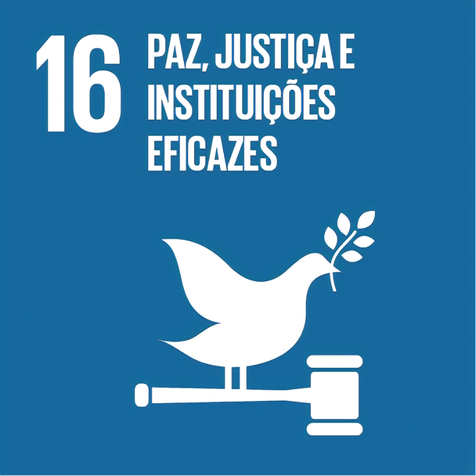
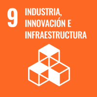
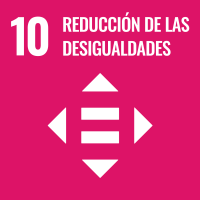
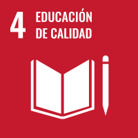

La desinformación y las noticias falsas se han convertido en amenazas globales, distorsionando la verdad y debilitando la confianza en los medios. JourNews surge como la solución para combatir este problema global a través de inteligencia artificial avanzada.
JourNews es una plataforma democratizada de noticias que utiliza algoritmos de inteligencia artificial para verificar la autenticidad de las noticias en tiempo real, contrastando la información entre medios oficiales e independientes. Es un espacio seguro donde los periodistas pueden compartir sus reportajes y la población global puede confiar en la información que consume.
Sube o accede a la noticia en JourNews.
La inteligencia artificial verifica la información en tiempo real.
Resultados verificados presentados al usuario.
Opción de compartir o monetizar el contenido verificado.
JourNews contribuye a varios Objetivos de Desarrollo Sostenible (ODS), promoviendo la paz, justicia, igualdad en el acceso a la información y la innovación tecnológica en el periodismo.

ODS 16: Paz, Justicia e Instituciones Sólidas

ODS 9: Industria, Innovación e Infraestructura

ODS 10: Reducción de las Desigualdades

ODS 4: Educación de Calidad (indirectamente)
Estamos buscando colaboradores que compartan nuestra visión de un mundo más informado y justo. Si eres un inversor, periodista, desarrollador, o una organización interesada en aliarte con nosotros, ¡queremos escucharte!
Contáctanos